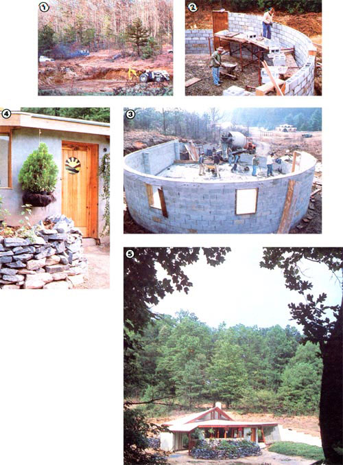
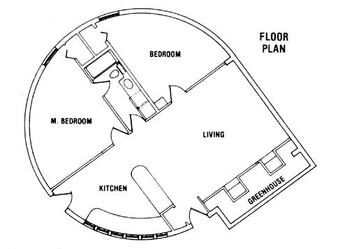

We're ready to prove, once again, that energy-efficient housing doesn't have to be expensive.
You probably didn't have to read between the lines on page 40 of MOTHER NO. 82 to figure out that we were pretty excited to announce the latest project at the Eco-Village. The Low-Cost Homestead is the most ambitious single effort yet tackled at our 622-acre center for research into lifestyle alternatives, and the combination of an inexpensive and energy-efficient home with perennial agricultural techniques and renewable energy sources will-we hope-allow that integrated one-acre project to become entirely self-sufficient.
But, because permaculture techniques (which involve the creation of sustainable agricultural systems) require years to establish and perfect, at this time there's no way we can report on the success (or failure) of our schemes for raising plants and animals. (You can read about what we have in mind, though, in the accompanying sidebar.)
Furthermore, as a result of our crew's busy summer schedule (while the Eco--Village is open to the public), the 12-volt micro hydropower system isn't yet fully debugged. However, the earth-sheltered home that's the core of the project is, for all intents and purposes, completed.
HOW LOW CAN WE GO?
Our goal in designing this house was to produce as inexpensive a structure as possible (one that could accommodate a three- or four-member family) while still attaining reasonable energy efficiency . . . all without skimping on the structure's long-term durability. We felt certain that this could be accomplished at a cost of less than $10 per square foot in materials (exclusive of land, excavation, septic, water-supply, and energy system costs), and decided to shoot for $6.00 per square foot.
Impossible, you say? Well, we'll agree that a conventional home probably can't be built for less than $10 per square foot, no matter how shabbily it's finished. Indeed, because of a standard "box" design's inherently inefficient use of materials-which contractors happily balance against a reduction in labor-our crew knew that an ordinary plan was out of the question. Ingenuity and sweat were going to have to take the place of a semi loaded with 2 X 4's.
THINK AGAIN
Other building projects (such as "My MOTHER's House", which has appeared in several issues, beginning with No. 70) have convinced us that earth sheltering can provide energy efficiency without requiring that the builder resort to incorporating tremendous thick nesses of insulation. Now we're perfectly willing to spend money on Rvalue . . . unless we can get the earth to do the job gratis. And, in our comparatively ,temperate North Carolina climate, a little bit of dirt can go a long way.
Yes, some degree of berming seemed to be destined for our rock-bottom-dollar home. Unfortunately, the walls of typical earth shelters must be quite stout to withstand both the weight of the earth and hydrostatic pressure. And, as we learned in building My MOTHER's House, that sort of construction can get pretty expensive. On the other hand, it's well known that a convexly curved wall (or ceiling) is better able to withstand stress than is a flat one, so MOTHER's Eco-Village crew came up with the idea of building a round house. Not only would this approach save on structural materials (since it wouldn't require the heavy walls demanded by a "square" home), but the shape would provide more floor space (with fewer useless corners) per dollar invested than would a square building.
The floor plan that we settled upon is based on a 36'-diameter circle but isn't actually completely round. To accommodate a greenhouse, a section of the southeast portion of the circle was brought out to a point (forming what looks much like a teardrop from above), so that the flat greenhouse glazing could be faced south. Because of our building's location, however, accomplishing this-while maintaining adequate bering-did involve some compromise.
You see, the main topographic feature in the hollow chosen as our building site is a west facing slope that tapers toward a creek (with a mean flow of about 30 gallons per minute) draining south to the Eco-Village lake. On the other side of the small watercourse, a hillside rises away steeply . . . and late on summer afternoons its cover of deciduous trees shades the little valley extensively. Consequently, we realized that the building would have to be dug in far enough up the slope to avoid winter shad ing, and the south line would have to run parallel to the hillside's contours.
Because the westerly direction of the hillside didn't cooperate completely with a perfect solar orientation, our designers decided to extend the south-pointing wall in a gentle arc, letting it serve as a retaining wall. Then, to provide as much berming as possible, they cut down into the roughly 15% slope to the point where the uphill wall would be buried to its top. Thus, the lower side of the 36'-diameter circle is still about three feet below grade. In addition, material removed for the excavation was later used to increase these depths. As a result, the building is bermed to at least four feet in depth around most of its circumference.
NEW KID ON THE BLOCK
Conventional 8"-deep, 16"-wide footings were dug for the building, but the technique used for preparing the trenches was a bit unusual. After the major excavation had been dug with the backhoe on our tractor, staffers David Landreth and Jim Hall turned the earth within the 36'-diameter circle with a TroyBilt rotary tiller, and then dug out the ditch with shovels. (This method might save an owner-builder money on machine operation. More important, it would be difficult to prepare a smoothly rounded trench with heavy equipment.)
Two rings of No. 4 reinforcing rod were supported in the trench, about three inches off its floor. Then 36" No. 4 starter bars (to tie the walls to the footings) were set vertically every 32 inches along the curved wall and every 16 inches on the flat portion (two more bars were set where the pilasters would be located) . . . and nine yards of concrete were poured into the ditch.
As the footings cured, our crew discovered the first problem: A spring surfaced that was large enough to produce a pool of standing water on the earth within the ring. At that point, it became obvious that the planned rammed earth floor probably wasn't going to work. The only practical solution appeared to be to provide generous drainage, put in a vapor barrier, and pour a slab.
So two courses of 8" concrete block (including the reinforced and tied-in pilasters) were laid up on the footings, a 12" layer of 3/4" stone was poured inside, a 6-mil polyethylene moisture barrier was carefully sealed and lapped up the foundation walls, plumbing was roughed in, and a slab of 3-1/2" average thickness was poured to the top of the foundation and screeded from that level.
From there on, the process of laying up the walls was more straightforward than our masons had dared to hope. As it turned out, the curve of the wall was gentle, and the larger exterior gaps between the 8" blocks therefore could easily be plugged with mortar. After the twelfth course had been laid, the top of the wall was formed up with scrap plywood, enabling the crew to pour a bond beam around the ring. No. 4 steel bar was then dropped to meet the starter bars, and, in turn, the rods were wired to two rings of No. 4 steel running horizontally around the beam. Before the concrete truck arrived, those block cores without rebar were plugged (to avoid filling them with the pricey mix), so only five yards were required to ring the top of the wall and fill the reinforcing cores.
With 1,050 concrete blocks in the walls . . . 27 yards of concrete poured for the footings, slab, and reinforcement . . . and 800 feet of No. 4 rod intertwining the structure, we're already almost $2,500 into our total budget of $6,000 to $10,000. Therefore, the steps we'll relate in the next issue of' MOTHER-which will include the framing, rafters, and roofing will obviously have to involve more imaginative moneysaving features. So polish up your sliding T-bevel (or, better yet, your Squangle) and get ready for a lesson in cutting compound angles!
ABOUT TIE LOW-COST HOMESTEAD
Is it possible to achieve independence on one acre? Well, with imagination, hard work, and the right one acre, we think it can be done . . . and that's what this project is all about. Of course, providing food, shelter, and energy for four people from such a small piece of ground is a tall order, and we have no illusions that we're likely to be able to achieve it quickly or without stumbling a few times. Still, we think self sufficiency is a goal worth pursuing, and we hope that in this and future issues of MOTHER we'll be able to help some of you in your struggles to achieve independence . . . by doing some of the experimenting for you.
SHELTER: The core of the low-cost homestead is the 1,000-square-foot, two bedroom earth shelter described in the accompanying article. Instead of conventional rectilinear construction, we've chosen a more structurally sound round design . . . which allowed us to use 8" concrete block, rather than more expensive 12" block or a poured wall. In addition, the circular plan yields significantly more useful floor space than would a square building that used a similar amount of material. For example, the exterior walls alone have 11 % less surface area than would a square building of equal floor space.
A greenhouse with built-in planting beds extends south from the living room, and will provide both fresh greenery and a solar heating boost for the dwelling. During summer, however, an overhang shades the greenhouse, kitchen, and clerestory windows from direct sunlight through the hottest part of the day.
Naturally, we chose to insulate the building to the extent that our project's finances would allow. And you might be surprised to find out that, even on less than $10 per square foot, we managed to afford a ceiling value of about R-26 and wall Rvalues anywhere from 13 (on the most heavily bermed portions) to as much as 41. (We left the slab uninsulated. . . though folks in more extreme climates might want to alter that detail.)
Backup heating will be provided by a Vermont Castings Vigilant wood stove lo cated almost in the center of the building, and that unit's capabilities will be enhanced to some extent by a mass wall of high-manganese brick built behind the wood burner.
The home's domestic water will be solar heated by a batch device set at the face of planting beds located outside the kitchen windows-and H20 consumption will be kept to a minimum with low flow faucets and a Seiche One toilet that uses less that: a gallon per flush.
Finally, the earth-sheltered design should keep maintenance on the building to a minimum . . . allowing most of the occupants' energies to be devoted to work on the sustainable agriculture systems.
And, moving beyond the practical, we've been pleased to note that most people find our earth shelter more pleasant to be in than the average conventional home. Generous amounts of glass in the greenhouse and kitchen keep the spacious living room/ kitchen day-lit, and the combination of op erable casement windows in each bedroom (these portals also offer fire exits) and a full-width clerestory bounces plentyof sunlight around on the white walls and ceilings of those areas. (In fact, even the bath has its own clerestory.)
ENERGY: Our building is wired for either 12-volt DC or 110-volt AC electricity. The low pressure juice will be supplied by a tiny hydroelectric plant fed by the creek that's immediately adjacent to the home and should make up the majority of the power needed. With about 70 feet of fall, we hope to be able to produce approximately 150 watts ofelectricity on a continuous basis. While this may not sound like much power-and indeed, in conventional terms it isn't-150 watts per hour will add up to about 3.6 kwh per day . . . easily enough to operate lights, an efficient 12volt refrigerator, and an occasional small appliance. This electricity will be stored in a battery bank located in a shack next to the main structure. Backup power, and high-demand loads, will be supplied by a 6.5 kw, liquid-cooled Honda generator. . . which we've already used to power some of the construction tools.
Space heat will, we hope, be almost entirely sun-provided, since the energy demands ofthe structure should be very low becauseof its conservative size, earth sheltering, and insulation. There are still likely to be tunes, however, when the wood stove will have to be lit. Whether or not those demands can be met with cleared brush and cull trees from the one acre remains to be seen. But, in any event, the quantity of wood that might have to come from the property should be small.
PERMACULTURE: The earth-sheltered house is a major feature of MOTHER's Low Cost Homestead, but it's by no means the most important element. As stated above, our goal is to establish a one acre mini-ecosystem composed of many diverse-but mutually interdependent and beneficial-features. Each segment (including the house, gardens, pond, and outbuildings, along with the various plants, animals, and people inhabiting the area) is intended to perform several different functions, and should contribute to the well being and efficient operation of the others, creating a harmonious and productive whole.
This type of design is based on the concept of permaculture, a term coined by Australian gardener Bill Mollison. Formulated as a result of Bill's realization that human beings need to heal their relationship with the earth, permaculture's underlying philosophy might be expressed as "Live lightly . . . and let live." Much has been written on the subject, including an article in MOTHER NO. 77 ("Designing for Permanence", page 82) . . . but, in brief, permaculture systems forego regular, violent disruption of the soil (such as annual plowing) and the use or importation of exotic plant and animal material. Instead, they utilize and enhance the natural features of a site (such as its elevation, solar orientation, climate, winds, soil, and native-and especially perennial-plants) to develop an environment capable offulfilling human needs (those of a small family, for instance) with a minimum of disturbance to the overall ecology. It is an attempt to `fit in'; rather than "redo".
|
 STAFF PHOTOS [1] The excavation for our earth-sheltered home was dug with a front loader and a backhoe on our Ford tractor. [2] Laying block in an arc proved to beeasier than we'd expected. [3] But pouring the slab was made a bit more difficult by our decision to do so after the walls were up. [4] Our earth shelter's inviting front entrance. The door was made by Dean Davis, and the stained glass by Kay Herndon. [5] A view of the house from the hillside to the southwest. |
 |
|